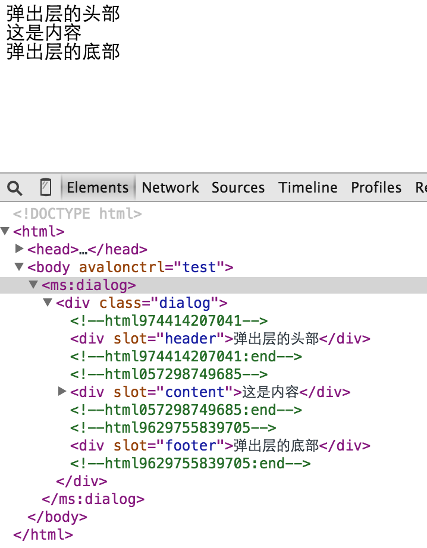

组件
介绍
avalon1.5新增的特性, 旨在简化原ms-widget复杂的组件定义方式,使用更直观的自定义标签来创建组件.
avalon的组件是以UI库为单位设计,换言之,一个组件必须隶属于某一个UI库.默认,avalon已经创建好一个叫ms的UI库. 我们可以通过avalon.library方法来创建自己的组件库
avalon.library("oni", {
$init: function() {},
$childReady: function() {},
$ready: function() {},
$dispose: function() {}
})- $init: Function 该组件开始渲染时调用的回调
- $childReady: Function 该组件的子组件渲染完毕,冒泡上来的回调
- $ready: Function 该组件渲杂完毕时调用的回调，它位于其所有子组件的$ready之后
- $dispose: Fuction 该组件被移出DOM树，并且元素不存在msRetain属性，才会调用的回调
我们通过avalon.component 来创建一个组件
avalon.component("ms:button", {
a: 1,
$replace: 1,
$ready: function() {
console.log("BUTTON构建完成")
},
$template: ""
})配置对象有如下几个特殊的配置项：
- $replace: Boolean, 真值时表示替换其容器
- $slot: String 默认插入点的名字
- $template: String 组件的模板
- $extend: String 指定要继承的组件名
- $container: DOM 插入元素的位置,比如dialog就不一定在使用它的位置插入,通常放在body中
- $construct: Function 用于调整三个配置项的合并,默认是function:(a, b,c ){return avalon.mix(a, b,c)}
- $$template Function 用于微调组件的模板,传入$template与当前元素
- $init: Function 刚开始渲染时调用的回调, 传入vm与当前元素
- $childReady: Function 当其子组件$ready完毕后, 会冒泡到当前组件触发的回调, 传入vm与当前元素
- $ready: Function 当组件的所有子组件都调用其$ready回调后才触发的回调, 传入vm与当前元素
- $dispose: Function 该组件被移出DOM树，并且元素不存在msRetain属性时的销毁回调, 传入vm与当前元素
当vm构建好时, $replace, $slot, $template,$container, $construct会消失
我们可以在
- $init中添加各种$watch回调, 为IE6-8的VBscript函数的this指向不正确进行bind fix
- $ready中重新计算组件的高宽
- $dispose中将VM中的元素节点置为null，移除各种dom事件，清空元素内部，方便GC
此外，每个组件VM，还添加了一个叫 $refs 的非监控对象属性，用于存放子组件的VM。
所有回调的执行顺序
组件自身的$$template-- > 组件自身的$init-- > 库的全局$init-- > 组件自身的$childReady-- > 库的全局$childReady-- > 组件自身的$ready-- > 库的全局$ready-- > 组件自身的$dispose-- > 库的全局$dispose
组件的配置
avalon.component("ms:arcus", {
a: 1,
$template: ""
})这里配置
然后，我们在页面上调用它时，可以通过config属性指定它在VM中的业务数据
<ms:button config="buttonOpts"> </ms:button>
avalon.define({
$id: "test",
$skipArray: ["butttonOpts"],
buttonOpts: {
a: 555
}
})如果你有多个ms:button组件，每个都有不同的配置对象，你可以使用ms-attr-config来动态生成config的值。
<div ms-repeat=array>
<ms:button ms-attr-config="opts{{$index}}">
</div>如果你嫌这样麻烦，不想在VM上加这配置属性，还可以使用ms-data-button-a来生成这个值。
<div ms-repeat=array>
<ms:button ms-data-button-a="$index+ 10">
</div>如果你连这个也不想，那么框架就会在已有的VM链上寻找默认配置对象。比如你的自定义签标的tagName为<ms:dropdown>， 那你在已有VM上定义一个叫ms:dropdown的对象就行了。如果你的自定义标签存在横线，比如ms:color-picker,那么它的默认配置对象 应为ms:colorPicker。
因此通过，在avalon.component定义的共公配置对象，加上 VM上指定的个性化配置对象， 加上每个元素上使用ms-data指定的dataset配置对象，能让每个button实例都尽然不同！
此外，我们还可以使用$id或identifier属性来指定组件VM的$id，不过当我们用ms-attr-$id动态生成$id可能有问题, 因为$是DOM属性中不是一个合法字符,我们只能用ms-attr-identifier来动态生成它。
<!DOCTYPE html>
<html>
<head>
<meta charset="UTF-8">
<meta name="viewport" content="width=device-width, initial-scale=1.0">
<script src="avalon.js"></script>
</head>
<body>
<script>
var vm = avalon.define({
$id: "test",
array: [1, 2, 3],
$skipArray: ["x0", "x1", "x2"],
x0: { //x0, x1, x2为ms:button的配置对象
a: "aaa",
"ms:text": { //这个为ms:button的ms:text的默认配置对象
b: 44
}
},
x1: {
a: "222",
"ms:text": {
b: 55
}
},
x2: {
a: "333",
"ms:text": {
b: 66
}
}
})
avalon.component("ms:button", {
a: 1,
$replace: 1,
$ready: function(vm, elem) {
console.log("BUTTON构建完成")
},
$template: "<button type='button'><span>|<ms:text></ms:text>|</span>{{a}}<ms:text/></button>"
})
avalon.component("ms:text", {
b: "默认值",
$replace: 1,
$ready: function() {
console.log("TEXT构建完成")
},
$template: "<strong>{{b}}</strong>"
})
</script>
<div ms-controller="test">
<ms:button ms-repeat="array" ms-attr-config="x{{$index}}"></ms:button>
</div>
</body>
</html><!DOCTYPE html>
<html>
<head>
<meta charset="utf-8">
<title></title>
<style>
div {
height: 50px;
width: 200px;
background: green;
margin: 5px;
}
</style>
<script src="avalon.js"></script>
<script>
avalon.component('ms:abc', {
$template: '<div></div>',
onClick: function() {},
$ready: function(vm, el) {
console.log(vm.$id)
}
});
var vm = avalon.define({
$id: 'test',
arr: [1, 2, 3]
})
</script>
</head>
<body ms-controller="test">
<header>
<ms:abc ms-repeat="arr" ms-attr-identifier="abc{{$index}}"></ms:abc>
</header>
</body>
</html>注意,$refs只保存其子组件的VM，不保存其子组件的子组件的VM！ 并且$refs里面的内容是你自己在$childReady回调添加,框架不会帮你做的.
<!DOCTYPE html>
<html>
<head>
<meta charset="UTF-8">
<meta name="viewport" content="width=device-width, initial-scale=1.0">
<script src="avalon.js"></script>
</head>
<body>
<script>
var vm = avalon.define({
$id: "test"
})
avalon.libraries.ms.$childReady = function(vm, e) {
var child = e.vm
vm.$refs[child.$id] = vm
}
avalon.component("ms:ancestor", {
a: 111,
$ready: function() {
console.log("ancestor构建完成")
},
$template: "<div><ms:parent></ms:parent>{{a}}<ms:parent></ms:parent></div>"
})
avalon.component("ms:parent", {
p: 222,
$ready: function() {
console.log("parent构建完成")
},
$template: "<div><ms:son></ms:son>{{p}}<ms:son></ms:son></div>"
})
avalon.component("ms:son", {
s: 333,
$ready: function() {
console.log("son构建完成")
},
$template: "<strong>{{s}}</strong>"
})
</script>
<div ms-controller="test">
<ms:ancestor $id="pope" />
</div>
</body>
</html>插入点的使用
我们可以在代表组件的自定义标签的内部,添加一些带slot属性的标签,它们会自动赋给组件VM的同名属性中.
<!DOCTYPE html>
<html>
<head>
<meta charset="UTF-8">
<meta name="viewport" content="width=device-width, initial-scale=1.0">
<script src="avalon.js"></script>
<script>
function heredoc(fn) {
return fn.toString()
.replace(/^[^\/]+\/\*!?\s?/, '')
.replace(/\*\/[^\/]+$/, '')
}
avalon.component("ms:dialog", {
header: "",
footer: "",
content: "",
onClick: function() {
console.log(this)
},
$template: heredoc(function(vm) {
/*
<div class="dialog">
{{header|html}}
{{content|html}}
{{footer|html}}
</div>
*/
})
})
avalon.define({
$id: "test",
a: "这是内容"
})
</script>
</head>
<body ms-controller="test">
<ms:dialog>
<div slot="header">弹出层的头部</div>
<div slot="content">
{{a}}
</div>
<div slot="footer">弹出层的底部</div>
</ms:dialog>
</body>
</html>这些带solt的元素叫做插入元素,它们在$init回调后进行收集, 收集完毕, 代表组件的自定义标签的innerHTML将会被其$template属性重写, 之后,这些插入元素会根据slot值进行分类,放到一个个文档碎片对象上. 然后这些文档碎片将插入到$template中的{{xxx|html}}位置上.

插入元素的定义有严格的要求,它必须是自定义元素的直接子节点. 如果这些节点中没有 slot 属性,并且你没有指定$slot的值 ,那么就没有插入点, 如果你指定了slot属性,并且也指定了$slot,那么除了那些指定了slot属性的节点,其他子节点都是$slot的
在avalon1.5.5中,自定义标签支持由取其on-xxx属性,框架会将它转换为onXXX,属性值为一个函数名,框架会在之前的vmodels中查找, 最后将它合并到组件VM中.
获取组件VM
<!DOCTYPE html>
<html>
<head lang="en">
<meta charset="UTF-8">
<title></title>
<script type="text/javascript" src="avalon.js"></script>
<script type="text/javascript">
var tabVM
avalon.library("test", {
$ready: function(vm) {
if (vm.$id === "tab1") {
//在这里操作
tabVM = vm
console.log(vm.$id)
console.log(vm)
}
}
})
avalon.component("test:tab", {
$template: '<h1>{{content|html}}</h1>',
content: "", //插入点机制
$slot: "content", //插入点机制
$init: function(vm, el) {},
$ready: function(vm, el) {},
$dispose: function(vm, el) {
el.innerHTML = "";
}
});
</script>
<script type="text/javascript">
avalon.ready(function() {
var vm = avalon.define({
$id: "test",
onClick: function() {
if (tabVM) {
alert("onClick " + tabVM.$id)
}
}
});
avalon.scan(document.body, vm);
});
</script>
</head>
<body ms-controller="test">
<div ms-click="onClick">点我</div>
<test:tab $id="tab1">这是tabs中的内容</test:tab>
</body>
</html>缺点是需要预先指定组件VM的$id
<!DOCTYPE html>
<html>
<head lang="en">
<meta charset="UTF-8">
<title></title>
<script type="text/javascript" src="avalon.js"></script>
<script type="text/javascript">
var tabVM
avalon.component("test:tab", {
$template: '<h1>{{content|html}}</h1>',
content: "", //插入点机制
$slot: "content", //插入点机制
onInit: function() {}, //必须定义此接口
$init: function(vm, el) {},
$ready: function(vm, el) {
vm.onInit(vm)
},
$dispose: function(vm, el) {
el.innerHTML = "";
}
});
</script>
<script type="text/javascript">
avalon.ready(function() {
var vm = avalon.define({
$id: "test",
getVM: function(vm) { //用来重写onInit
tabVM = vm
//这里继续做其他事
},
onClick: function() {
if (tabVM) {
alert("onClick " + tabVM.$id)
}
}
});
avalon.scan(document.body, vm);
});
</script>
</head>
<body ms-controller="test">
<div ms-click="onClick">点我</div>
<test:tab on-init="getVM">这是tabs中的内容</test:tab>
</body>
</html>此例则不需要指定VM,有点麻烦,但通用性更好
组件的构建全过程
avalon的扫描器从上往下扫描, 如果遇到带:号的自定义标签,就默认为是组件,如果它上面存在一个叫msResolved属性,那么立即开始构建过程.
如果没有msResolved属性,就把此元素的相关信息放到一个叫componentQueue列队中.
待到该组件的JS文件加载下来,执行avalon.component方法时,componentQueue就会被重新检测,如果符合条件,就执行它的构建过程
构建过程以下:
IE6-8的特殊处理
由于IE6－8下VM是一个VBScript对象 ，函数中的this并不是指向VM，而是window，需要我们在库的$init方法统一hack一下！
avalon.libraries.ms.$init = function(vm) {
for (var i in vm) {
if (vm.hasOwnProperty(i) && typeof vm[i] === "function") {
vm[i] = vm[i].bind(vm)
}
}
}如果你的组件是以ms为命名空间的话, 不需要使用avalon.librarys("ms"), 否则就要像下面这样做
<script src="avalon.js">
</script>
<script>
avalon.library("oni") //这个东西必须跟挨着avalon库,并且放到head标签中
</script>如果你是使用requirejs加载avalon库, 那你需要在head标签中插入以下脚本
<script src="avalon.js">
</script>
<script>
if (document.namespaces) {
document.namespaces.add("oni", 'http://www.w3.org/1999/xhtml')
}
</script>自定义标签是没有半闭合一说
<xx:aaa />浏览器总是将它解析成<xxx:aaa></xxx:aaa>， 如果它后跟着一个元素，就悲剧了！<xxx:aaa/><strong>111</strong>， 本来设想好的平级关系变成父子关系了， <xxx:aaa><strong>111</strong></xxx:aaa>